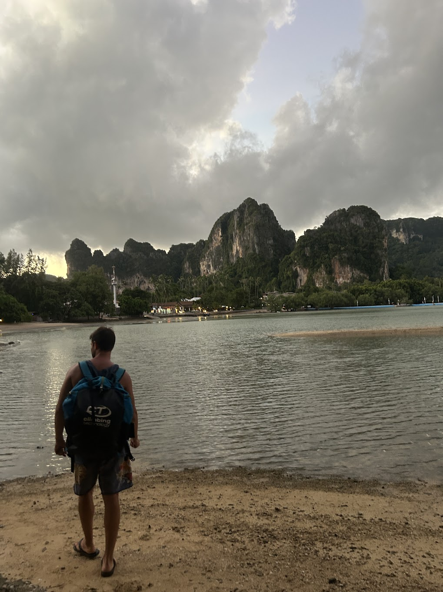

Engineer · systems thinker · minimalist · climber
I’m a software engineer passionate about distributed systems, automation, and building reliable tools that stay simple and transparent. I enjoy designing quiet, predictable systems that just work and feel pleasant to maintain.
My current work involves building AI-powered systems that help computers interpret and act on human interactions. I like problems that require both deep focus and creativity, balancing reliability with product intuition.
Outside of work, I’m drawn to mountains, minimalism, and reflective reading. I’ve lived between Brazil, France, and Southeast Asia, often preferring quiet mountain towns where life moves slowly. Living between these regions keeps me connected to different rhythms of life: the calm precision of French work culture, the warmth and creativity of Brazil, and the balance and simplicity of Southeast Asia.

I hold a Ph.D. in Computer Science from France, where my research focused on distributed systems and modular robots. The work explored how independent robotic modules can cooperate, self-organize, and adapt through decentralized coordination, combining engineering precision with emergent behavior.
Climbing gives me the same satisfaction as a well-structured system, with its precision, balance, and flow. I’ve climbed in Fontainebleau (France), Igatu and Serra do Cipó (Brazil), and on the sea cliffs of Tonsai and Railay in Thailand.